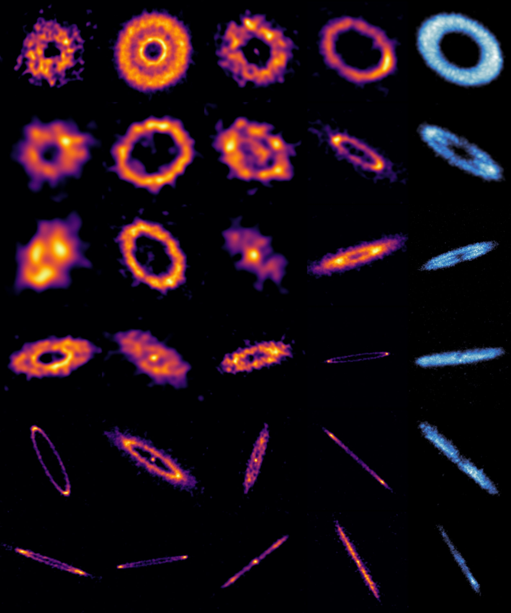
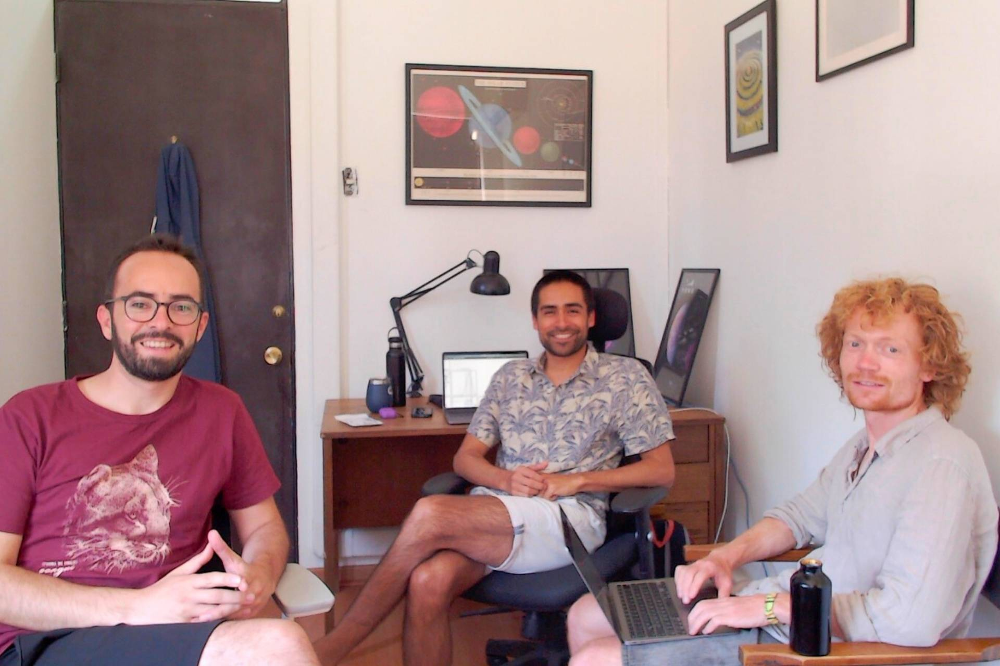

An international team of astronomers has succeeded in imaging planetary systems at a key and previously little-explored stage of their evolution: planetary adolescence. The study was carried out within the ARKS project (ALMA survey to Resolve exoKuiper belt Substructures), using the Atacama Large Millimeter/submillimeter Array (ALMA).
The project is led by Chilean astronomer Sebastián Marino, external researcher at Millennium Nucleus YEMS and academic at the University of Exeter, and includes active participation from YEMS researchers at the Universidad de Santiago de Chile (USACH).

The discs observed by ARKS are debris discs: belts of dust and debris that remain around a star once its planets have already formed. This stage is analogous to adolescence in the life of a planetary system: more evolved than protoplanetary discs (where planets are still forming), but still far from a stable configuration (like the Solar System).
"We often observe the 'baby photos' of forming planets, but planetary adolescence was the missing link," explains Meredith Hughes, one of the principal co-investigators of the project.
In our own Solar System, this phase is represented by the Kuiper Belt, a region beyond Neptune that preserves traces of violent collisions and planetary migrations that occurred billions of years ago.
Debris discs are extremely faint — hundreds or thousands of times fainter than the protoplanetary discs where planets are born — making them difficult to observe. Thanks to ALMA's unprecedented resolution, the ARKS team succeeded in revealing a surprising diversity of structures: multiple rings, extended halos, sharp edges, asymmetries, arcs and clumps.
"We are not seeing simple rings, but complex, dynamic systems that reveal a turbulent stage in the history of planets," says Sebastián Marino, YEMS external researcher and leader of the ARKS programme.
The ARKS project includes active participation from researchers at Millennium Nucleus YEMS based at the CIRAS Centre and the Physics Department at USACH:

This contribution reinforces the role of YEMS as a key player in frontier research on the formation and evolution of planetary systems.
One of the most interesting scientific challenges of the ARKS project was confronting a completely unexpected observation: one of the debris discs shows a strong asymmetry, with an apparent localised accumulation of rocks and dust in a specific region of the disc, similar to a dense cloud of debris. This type of structure is particularly difficult to explain at this evolutionary stage, where discs are usually symmetric.
Faced with this mystery, YEMS–USACH researchers led one of the central scientific papers of ARKS, proposing an explanation based on the interaction between solid debris and the small amount of gas still present in the disc. The study explores the feasibility of debris vortex formation, capable of concentrating solid material over long periods.
"These observations force us to rethink the role that even a minimal amount of gas can play in discs that we thought were almost completely dominated by solids. The possibility of debris vortices opens a new dynamic scenario for understanding these asymmetries," explains Sebastián Pérez, USACH academic and YEMS deputy director.
"While ALMA observations clearly show that there is gas in some extrasolar Kuiper Belt-type rings, we still don't know with certainty whether the amount we detect represents all the gas that is really there, or whether there is an additional invisible fraction that escapes our direct measurements. By carefully studying the conditions under which structures form in ALMA images, we can use the disc itself as a laboratory to infer how much gaseous matter is really there and how the system has evolved," explains Philipp Weber, YEMS-USACH researcher who led one of the 10 papers published.
The results suggest that this adolescent stage is marked by planetary migrations, giant collisions and intense orbital reshaping, similar to the events that gave rise to the Moon.
"These discs record an epoch when planetary orbits were being rearranged chaotically," explains Luca Matrà, co-investigator of the study.
The ARKS legacy will be key to identifying young planets still invisible and to understanding how planetary families are built and reorganised.
"It's like adding the missing pages to the Solar System family album," concludes Hughes.
More information: https://arkslp.org/
NRAO press release: ALMA Reveals Teenage Years of New Worlds
ESO press release: The precious rings of space
{kind=link}
{kind=link}